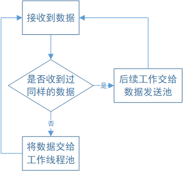

请求接收线程
基本的逻辑流程是这样的
- 接收线程收到客户端发来的请求数据
- 判断是否接收到过完全相同的数据，如果已经接收过且满足重发条件的话进行重发，否则回到第1步
- 如果是新数据，将数据派发给工作线程池，然后回到第1步继续接收来自客户端的请求

因为线程循环里做的额外事情太多的话会影响到接收工作，请求接收线程更注重于数据的接收及分派，分派出去的数据具体该怎么处理它是不关心的，它的任务就是收数据和转交数据而已。
接下来是代码实现：
UdpServer
先利用boost::asio构建一个UdpServer。
#pragma once
#include <boost/asio.hpp>
#include <boost/noncopyable.hpp>
#include <memory>
#include <array>
#include <queue>
#include "base/AesCipherBuffer.hpp"
#include "base/SpinLock.hpp"
#include "base/asio_server/ResponseSender.h"
#include "common/DateHelper.hpp"
//使用了boost::asio
namespace Base {
namespace AsioServer {
class UdpServer : boost::noncopyable
{
public:
UdpServer(short port, const std::function<void(const Base::AesCipherBuffer&, const boost::system::error_code&, const boost::asio::ip::udp::endpoint&)>& recv_callback)
:m_buff(1024), m_port(port), m_recv_callback(recv_callback)
{
m_io_service.reset(new boost::asio::io_service());
m_socket.reset(new boost::asio::ip::udp::socket(*m_io_service, boost::asio::ip::udp::endpoint(boost::asio::ip::udp::v4(), m_port)));
}
std::shared_ptr<boost::asio::ip::udp::socket> get_socket()
{
return m_socket;
}
//开始接收数据的工作
void run()
{
do_receive();
m_io_service->run();
}
//发送数据，不一定是和接收操作在同个线程中执行
//根据asio官方文档，socket的异步发送接收的初始化操作不是线程安全的
//因此要上锁来保证线程安全，这里用的是自旋锁
void send(Base::AsioServer::ResponseSender* p_sender)
{
m_socket_lock.lock();
recursion_send(p_sender, 0, p_sender->pack_size());
m_socket_lock.unlock();
}
private:
//因为udp包体积太大发送时效率和可靠性会下降
//根据实际情况可能会拆包，这个方法可以一次性发送多个包
void recursion_send(ResponseSender* p_sender, int pack_index, int pack_size)
{
AesCipherBuffer* p_buff = p_sender->buff_pointer(pack_index);
m_socket->async_send_to(boost::asio::buffer(p_buff->pointer(), p_buff->size()),
p_sender->m_remote_endpoint,
[this, p_sender, pack_index, pack_size](boost::system::error_code, std::size_t the_size){
if (pack_index >= pack_size - 1)
{
p_sender->m_response_sent_time = Common::DateHelper::Now();
p_sender->m_response_status = ResponseStatus::Sent;//状态置为已发送
}
else
{
recursion_send(p_sender, pack_index + 1, pack_size);
}
});
}
//数据接收，这里也要上锁确保线程安全
void do_receive()
{
m_socket_lock.lock();
m_socket->async_receive_from(boost::asio::buffer(m_buff.pointer(), 1024), m_remote_endpoint,
[this](boost::system::error_code ec, std::size_t bytes_recvd)
{
m_buff.resize(bytes_recvd);
//执行回调方法
m_recv_callback(m_buff, ec, m_remote_endpoint);
//继续接收
do_receive();
});
m_socket_lock.unlock();
}
//此处不使用c++11自带的互斥锁而是使用自旋锁
Base::SpinLock m_socket_lock;
boost::asio::ip::udp::endpoint m_remote_endpoint;
std::shared_ptr<boost::asio::ip::udp::socket> m_socket;
std::shared_ptr<boost::asio::io_service> m_io_service;
//本地监听的端口
short m_port;
//缓冲区，实现了hash算法来判断两个包是否相同
Base::AesCipherBuffer m_buff;
//回调方法
std::function<void(const Base::AesCipherBuffer&, boost::system::error_code, const boost::asio::ip::udp::endpoint&)> m_recv_callback;
};
}
}
UdpServer顾名思义，就是负责用udp协议发送和接收数据。
用法也简单，准备好一个回调函数，然后执行run方法后就会不断的进行接收操作了。为了灵活性发送操作和接收操作是分离的：
auto recv_callback = [...](const Base::AesCipherBuffer& buff,
const boost::system::error_code& ec,
const boost::asio::ip::udp::endpoint& remote_endpoint){
//...
};
UdpServer udp_server(port, recv_callback);
Base::AsioServer::ResponseSender::SetServer(udp_server);//绑定发送中介
udp_server.run();
就这么简单，准备好可用的端口，以及接收到信息时的回调函数即可。
回调函数每次接收到数据时都会被调用，其中Base::AesCipherBuffer是缓冲区，但这个缓冲区有点特殊的作用，后面再讲。
boost::system::error_code是错误代码，boost::asio::ip::udp::endpoint是网络终结点(IP和端口号)。
这里解释一下Base::AsioServer::ResponseSender：从名字看这是负责发送响应数据的，但它其实只是个中介类本身不进行实际的发送操作，实际的发送者还是udp_server
它包含了远程节点地址端口，将要发送的数据等等发送所需要的信息，调用sender.async_send()本质是调用udp_server.send(sender)，上面代码的绑定操作就是这个目的。
由于异步发送和接收的初始化操作耗时较短，所以使用自旋锁而不是互斥锁来同步。
数据接收
接下来是整个请求接收线程的代码
std::queue<std::pair<Base::AesCipherBuffer, Base::AsioServer::ResponseSender*>> request_data_queue;
Common::ThreadHelper::CreateThread([this, &request_data_queue, &mutex, ¬_empty](){
...//工作线程，这里先略过，晚点再讲
});
//类似于java里的hashmap，用于实现缓存机制
std::unordered_map<std::size_t, Base::AsioServer::ResponseSender> map_request_response;
std::mutex mutex_map_request_response;
//这是UdpServer接受到数据后的回调函数
auto recv_callback = [&request_data_queue, &mutex_request_data_queue,
&map_request_response, &mutex_map_request_response, &cv_queue_not_empty, this]
(const Base::AesCipherBuffer& buff,
const boost::system::error_code& ec, const boost::asio::ip::udp::endpoint& remote_endpoint){
if (!ec && buff.is_data_valid())//没发生错误且通过了初步的数据校验
{
//由于服务器采用的是udp协议，所以传输不能保证可靠性，因此要考虑客户端重发数据的情况
//有的时候服务器已经处理了客户端发来的数据包，但因为发给客户端的响应丢包了
//导致客户端重新发了完全一样的包，如果是这种情况服务器没必要重新做一遍已经做过的事情
//直接把缓存结果发回给客户端即可
std::unique_lock<std::mutex> lock_map(mutex_map_request_response);
auto it = map_request_response.find(buff.get_hash());
if (it == map_request_response.end())
{//缓存中不存在该数据，说明是新的包，插入到数据队列中
//这里容易被误解所以解释下这里的emplace，本质其实是emplace(,ResponseSender(remote_endpoint))
auto pair = map_request_response.emplace(buff.get_hash(), remote_endpoint);
lock_map.unlock();
std::lock_guard<std::mutex> lock_queue(mutex_request_data_queue);
request_data_queue.emplace(buff, &pair.first->second);
not_empty.notify_one();//通知队列非空
}
else
{
//若服务器已经处理过完全相同的包，根据实际情况决定是否重发
auto& sender = it->second;
sender.resend_if_needed(remote_endpoint);
}
}
};
Base::AsioServer::UdpServer udp_server(port, recv_callback);
Base::AsioServer::ResponseSender::SetServer(udp_server);//绑定发送中介
//通知主线程用户服务器已就绪
_is_ready = true;
_cond_ready.notify_one();
udp_server.run();
解释一下这里用到的两个容器request_data_queue和map_request_response
前者是和工作线程共用的队列，接收线程收到新数据时会将数据插入队列，然后由工作线程取出。
后者是个缓存map，主要用来解决重发问题：将发送器和请求数据绑定起来，用请求数据做索引。这样一旦收到了完全相同的数据，就可以将发送器取出来，若满足重发条件则进行重发操作。
将收到的请求分配给工作线程
接下来讲解下数据分配的过程
std::unique_lock<std::mutex> lock_map(mutex_map_request_response);
auto it = map_request_response.find(buff.get_hash());
if (it == map_request_response.end())
{//缓存中不存在该数据，说明是新的包，插入到数据队列中
//这里容易被误解所以解释下这里的emplace，本质其实emplace(,ResponseSender(remote_endpoint))
auto pair = map_request_response.emplace(buff.get_hash(), remote_endpoint);
lock_map.unlock();
std::lock_guard<std::mutex> lock_queue(mutex_request_data_queue);
request_data_queue.emplace(buff, &pair.first->second);
not_empty.notify_one();//通知队列非空
}
else
{
//...
}
程序在查找map发现近期找不到相同数据记录，说明是新数据需要提交给工作线程，先将该数据放入map，然后将请求数据插入队列，等待工作线程获取。
由于两个容器都需要跨线程使用，所以都要上锁来确保数据安全。
重发机制
如果在map中找到了记录，说明以前接收过完全相同的数据，则要根据实际情况来判断是否需要重发。
//...
else
{
//若服务器已经处理过完全相同的包，取出发送器，根据实际情况决定是否重发
auto& sender = it->second;
sender.resend_if_needed();
}
关于是否需要重发的判断：
bool resend_if_needed()
{
if (ResponseStatus::Sent == m_response_status)
{
//当且仅当距离上次发送响应超过3秒时才发送
if (Common::DateHelper::Now() - m_response_sent_time >= Seconds(3))
{
async_send();
}
}
else return false;
}
只有发送器的状态是"已发送"（因为有可能工作线程还没处理完就又收到了完全相同的数据），且距离上次发送时间超过3秒才会进行发送操作。
另外还需要一个清理线程负责清理map中的过时数据，以防过时数据堆积：
ThreadHelper::CreateThread([&map_request_response,&mutex_map_request_response,this]{
//每隔1分钟执行一次，删除距上次发送超过10分钟的数据，以防map_request_response越来越膨胀
int count = 0;
while (true)
{
ThreadHelper::SleerForMilliseconds(60000);//休息1分钟
if (++count % 10 != 0)continue;
//删除前要先上锁
std::lock_guard<std::mutex> lock_map(mutex_map_request_response);
for (auto it = map_request_response.begin(); it != map_request_response.end();)
{
auto& sender = it->second;
//状态为Sent(已发送)，且当前时间距离上次发送时间超过10分钟
if (sender.status() == Base::AsioServer::ResponseStatus::Sent &&
DateHelper::Now() - sender.last_sent_time() > Common::Seconds(600))
{
map_request_response.erase(it++);
}
else{ it++; }
}
}
});
接收线程的讲解就到这里了，总结一下就是：循环接收数据，如果是新数据就转发给工作线程，否则根据实际情况决定是否要重发。 接受线程更多的是扮演一个分配任务的角色，而不进行执行具体的业务逻辑。